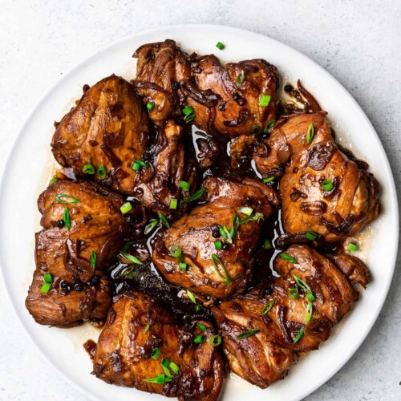

Chicken Adobo

A Filipino Classic
This dish is considered as the legendary filipino side dish, and has gained popularity around the world. The taste profile depends from region to region, but most commonly prepared savory, sour, with a tad bit of sweetness. And ofcourse, best served with rice.
Ingredients:
*Tantsyahan*
- Chicken
- Soy Sauce
- Dried Bay Leaf
- Garlic
- Onion
- Water
- Salt
- Black Pepper
- Vinegar
- Sugar
Steps:
- Marinate chicken with soy sauce, minced garlic, and pepper for 30min to 1 hour.
- Saute onoin in pan, then add the chicken, cooking it until brown.
- Add the marinade, bay leaf, and a cup of water.
- Cook until chicken is tender, then add more salt and perpper to taste.
- Add the vinegar without mixing, bring to boil.
- Finally add the sugar.
- Cook to preferred sauce consistency and taste.
- Serve with rice.
Back to top
Back to main page